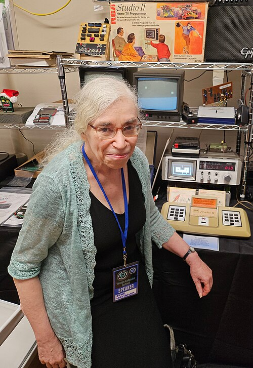

En bref
Née : 1958, New Jersey
Père : Joseph Weisbecker, ingénieur chez RCA
Études : Rider University
Connue pour : jeux RCA Studio II
Joyce Weisbecker
née en 1958 - Pionnière du jeu vidéo indépendant
Présentation
Joyce Weisbecker est une programmeuse américaine. En 1976, juste après le lycée, elle crée des jeux pour la console RCA Studio II comme prestataire indépendante. Elle est souvent présentée comme la première programmeuse professionnelle de jeux vidéo, même si elle préfère qu'on la décrive comme la première développeuse indépendante.
1. Enfance et jeunesse
Joyce grandit dans le New Jersey. Sa mère est enseignante et son père, Joseph, ingénieur chez RCA, construit des ordinateurs chez lui pendant son temps libre. Il leur donne, à elle et à sa sœur Jean, l'occasion de s'y initier.
Elle apprend à programmer sur le prototype familial FRED (« Flexible Recreational & Educational Device »). Elle suit son père à son bureau, curieuse de ses nouveautés.
2. Débuts dans l'informatique
À la fin du lycée, son père la recommande à RCA, qui cherche des jeux pour sa future console. Elle est engagée en 1976 comme contractuelle, payée à l'heure, à peine au-dessus du salaire minimum.
Elle écrit d'abord deux petits jeux, « Jackpot » et « Snake Race », publiés dans le manuel de l'ordinateur COSMAC VIP. Elle y est créditée, mais non payée.
3. Ses grandes réalisations
En août 1976, elle vend « TV Schoolhouse I », un quiz pour deux joueurs, pour 250 dollars. Elle le programme en une semaine. Suivent « Speedway » (course de voitures) et « Tag » (jeu de poursuite), puis trois jeux pour le COSMAC VIP en 1977.
TV Schoolhouse I
Un quiz pour deux joueurs.
Speedway/Tag
Deux jeux d'action pour deux joueurs.
Slide, Sum Fun…
Des jeux pour le COSMAC VIP.
Son défi : faire apparaître des graphismes sur un écran de 64 sur 32 pixels. Dans « Speedway », les voitures sont de simples rectangles.
4. Dates clés
1958 : Naissance dans le New Jersey.
1976 : Engagée par RCA comme contractuelle.
1976 : Vente de « TV Schoolhouse I » pour 250 $.
1977 : Sortie de la console Studio II.
1977 : Jeux pour le COSMAC VIP.
1978 : Fin de production de la Studio II.
1980 : Diplôme à Rider University.
5. Héritage et reconnaissance
La Studio II est un échec commercial et sa production s'arrête en 1978. Joyce quitte l'industrie du jeu vidéo : elle étudie à Rider University et obtient son diplôme en 1980 (génie informatique et actuariat), puis travaille notamment comme ingénieure radar.
Redécouverte dans les années 2010, grâce à des archives conservées au musée The Strong, elle est aujourd'hui reconnue comme une pionnière du jeu vidéo indépendant.